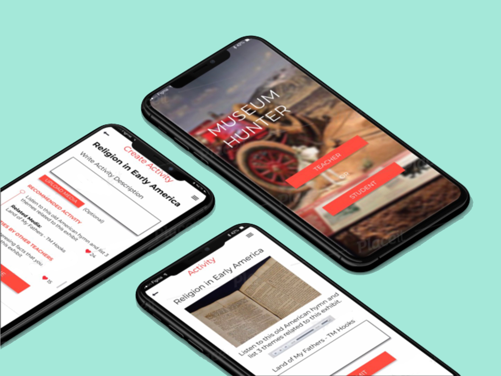
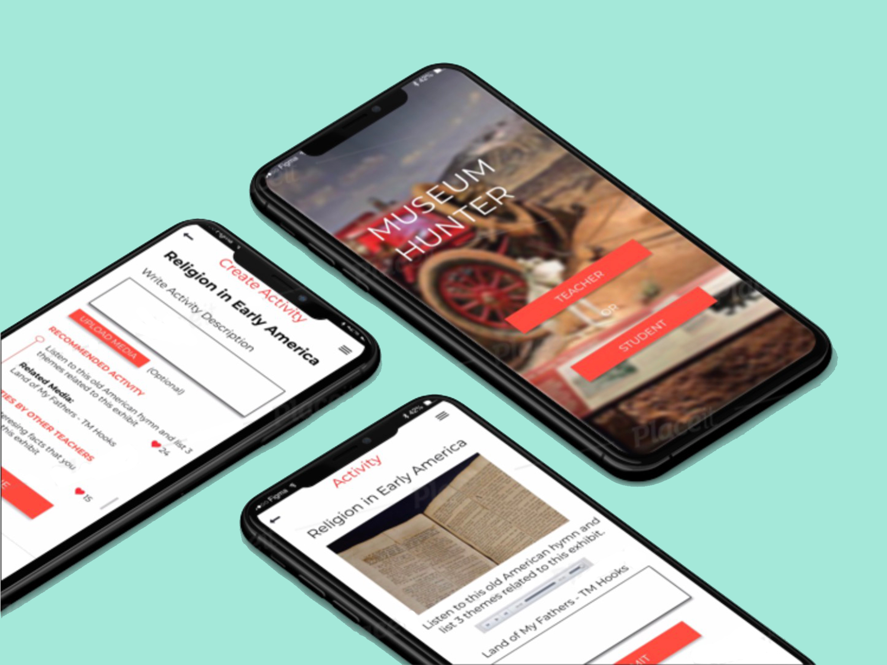

A Mobile App
that would help 150,000+ teachers to develop contextualized museum lessons
that would help 150,000+ teachers to develop contextualized museum lessons
Every classroom is unique - in the types of students in the class, the lesson that they’re learning, and in what they’re interested in learning more about. When going to the museum, each trip should be catered to support and contextualize exactly what that class is learning at that moment in time. More often than not, however, trips to the museum are not facilitated in a way that provides students a bridge to formal learning. These trips are either guided tours by a museum educator, or unstructured time for students to explore the exhibits on their own. This results in students having fun in an environment that breaks up the monotony of sitting in class every day, but does not actually allow them to deeply relate what they’re learning in the museum to the concepts being covered in class. Given the amount of time and effort that it would take for a museum educator to work with teachers in customizing the experience for each class, it is unreasonable to expect that museum educators would be able to develop individualized lessons for each class visiting the museum. The lack of resources allocated to connecting these two parties makes it difficult to create a learning experience that truly contextualizes the museum experience in terms of the work being done in the classroom.
The target audience for this project are teachers grades from 6th to 8th grade. While other users can fall outside of this grade range, we have decided to focus on this demographic where students are still gaining foundational knowledge; whereas pre-6th grade students are still learning basic human skills (reading and writing), and post-8th grade students are learning in-depth concepts.
The project aims to address the disconnect between formal classroom learning and informal learning that occurs during museum field trips. The goal is to provide a resource that allows them to easily contextualize museum artifacts in terms of what is being covered in the classroom at that time.
Objectives
1. Learners will be able to create meaningful museum learning experiences.
2. Learners will be able to use an app to facilitate the process of developing a museum lesson that contextualizes in-class material.
3. Learners will transition from decontextualized museum tour field trips to app-based customized museum learning for their students.
Most museum apps include information about all exhibits, very broadly, and do not provide teachers the opportunity to select specific exhibits to focus on and situate these within the context of their curriculum at large. There are also apps that allow users to create their own tours, but they are lacking in that they do not provide students with the opportunity to engage with the exhibits beyond reading about them, and they do not provide space for discussion of the exhibits. For example, the Artlens app allows users to create their tour in the museum and discover what exhibits are nearby.
Additionally, some apps provide access to experts during a museum visit. The ask BKM app allows users to ask whatever questions during their visit to the museum, and educators and historians will give answers immediately. However, this feature does not provide much in the way of contextualizing the exhibits, beyond giving students access to a resource for answering questions that they are curious about.
Our approach to designing this app draws primarily on information seeking behavior theories. In information seeking, learners have decided to gather information about a given topic, as a response to the identification of a need for said information. It is an active search for information to be able to answer a given question or set of questions. Wilson (2006) discusses his 2002 model of information seeking as the “idea of a problem solving process to which recurrent searches for information are connected as information problems are experienced in the process of solving the more general research problem” (p. 28) He puts forward the below model, which demonstrates the progression from problem identification to solution statement, facilitated by the resolution of uncertainty through information seeking. Our idea is that teachers identify that students are unable to connect museum field trips and formal learning as a problem, they will seek information about the exhibits through our app, and will resolve this through the creation of museum scavenger hunts.